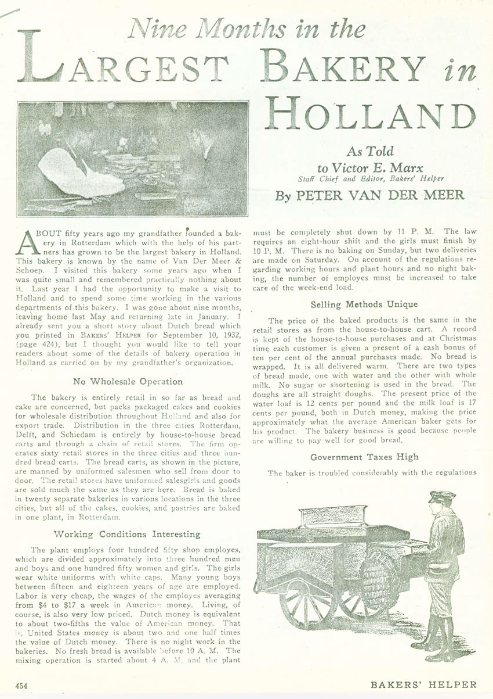
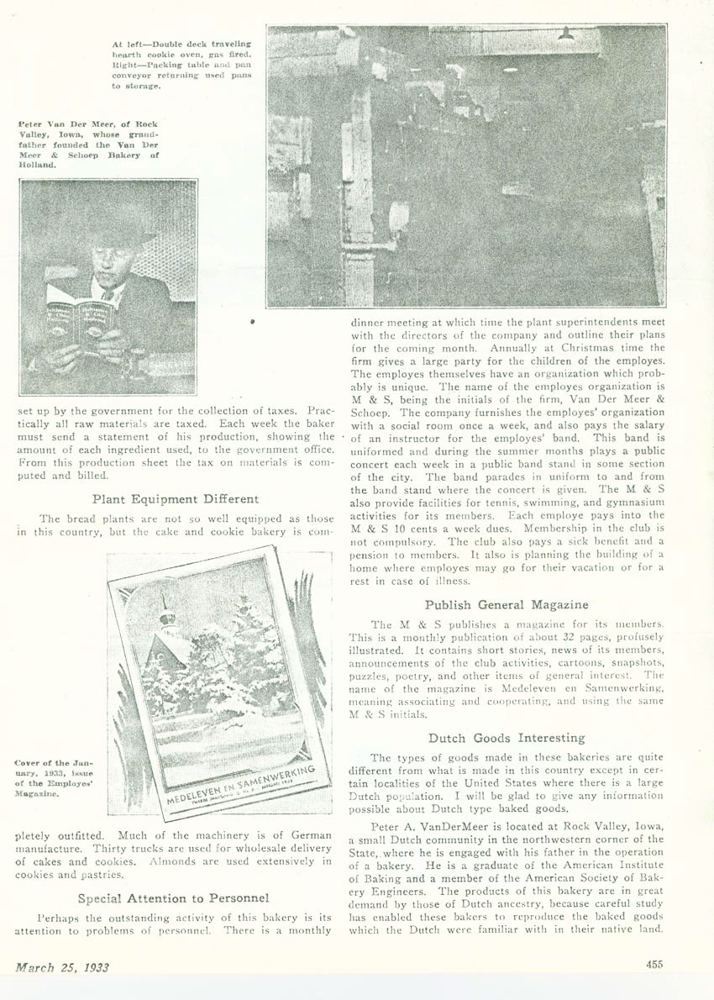

Nine Months in the Largest Bakery in Holland
Following is an article by Peter Arie Vander Meer Sr about working at the 'Van Der Meer and Schoep' bakery in Holland. The article was published on March 25, 1933, when Peter was just 22 years old.


Sat, October 14th 2006, 10:45 PM PDT
Mark Vander Meer
Wow, didn't know this stuff exsisted.
Wed, December 27th 2006, 5:16 PM PST
Tom Vander Meer
This is awsome. Pete, where did you get this? I never had any idea abou all of this
Wed, December 5th 2007, 12:24 PM PST
peter van der meer
Sorry Peter. If I had known about this article I would have printed it in ourfamilybook.
I understand you did not receive the book. Therefore you will have another copy.
Greetings from Holland
Peter van der Meer
Fri, April 18th 2008, 4:46 PM PDT
Bram Bottema
My father was the Managing Director of the v.d.Meer en Schoep bakery in Rotterdam-Charlois (Holland) between 1947-1969. As such, I was grown up between bread and 'butter'.
/Bram Bottema / Sorunda / Sweden